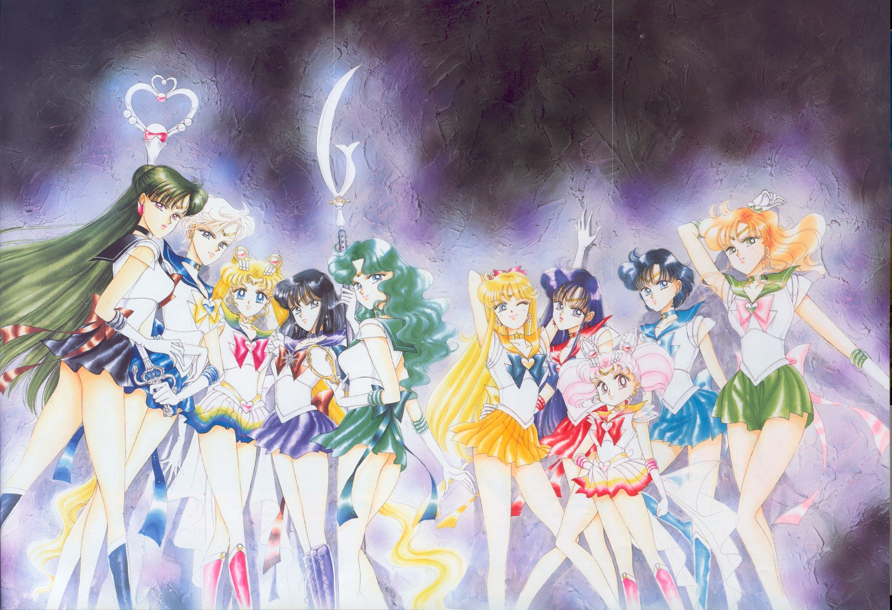
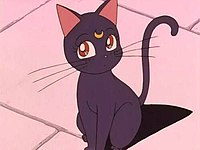
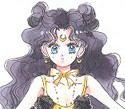
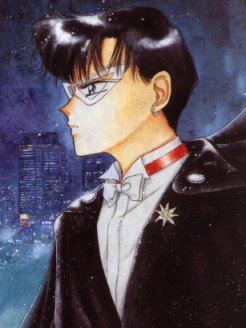

In Sailor Moon a young girl named Usagi Tsukino gains the ability to transform into a magical alter ego -Sailor Moon- and she along with 9 other magical sailor guardians (the first one being Sailor V) must prevent the destruction of the Solar System.
Click here for more info.
The one that introduced the ability to transform to Usagi is Luna, a talking cat that advises the guardians throughout their missions. Although she is usually in the form of a black cat she has the ability to take on a human form.
 Tuxedo Mask, also known as Mamoru Chiba is someone able to perform superhuman feats, often helping Sailor Moon throughout her missions. Throughout the series Tuxedo Mask and Sailor Moon form a strong bond as more about his character is discovered.
